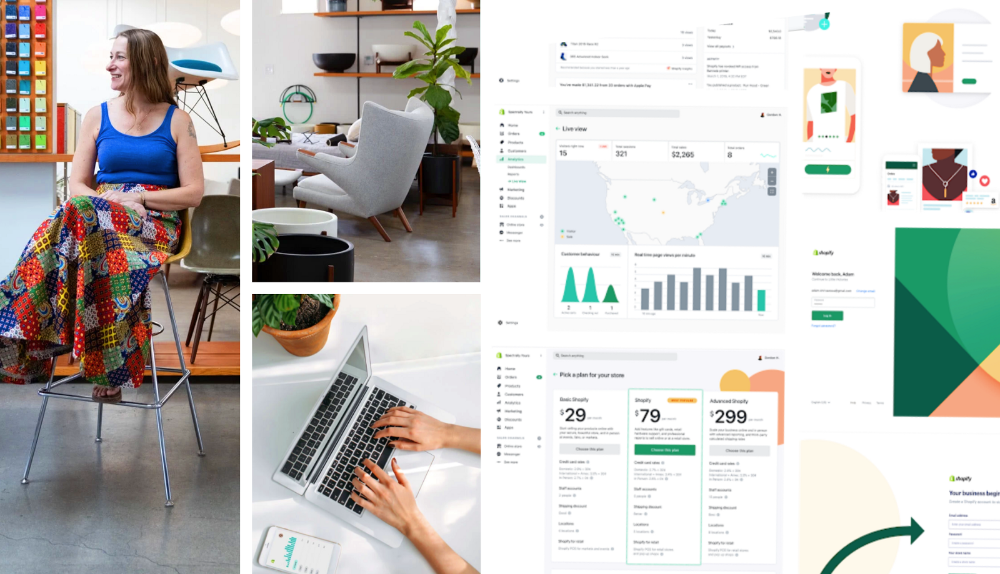
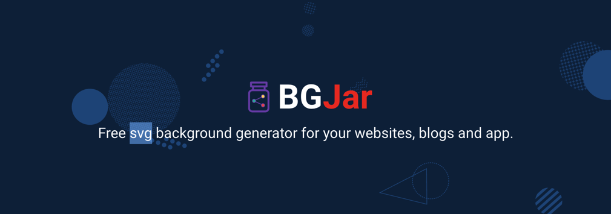
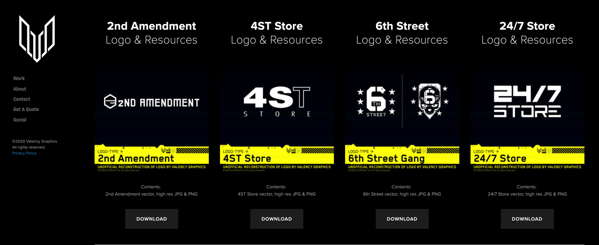
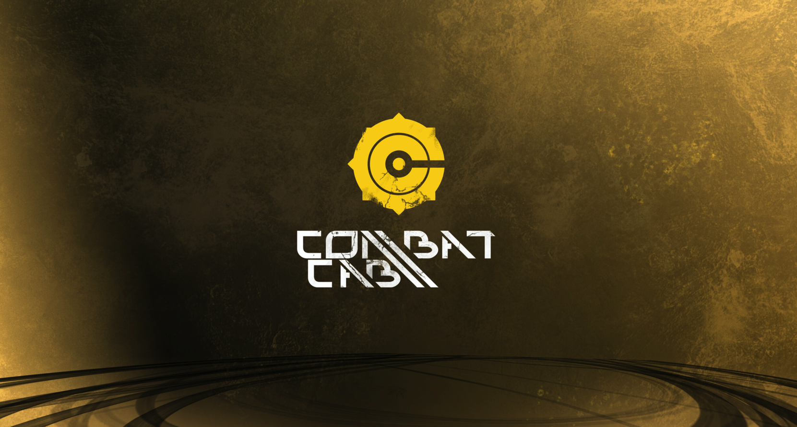
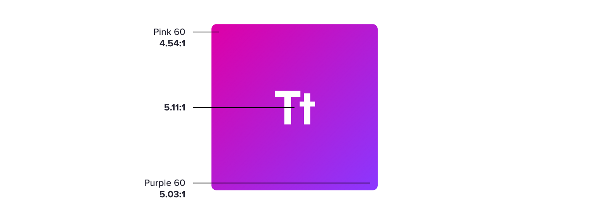
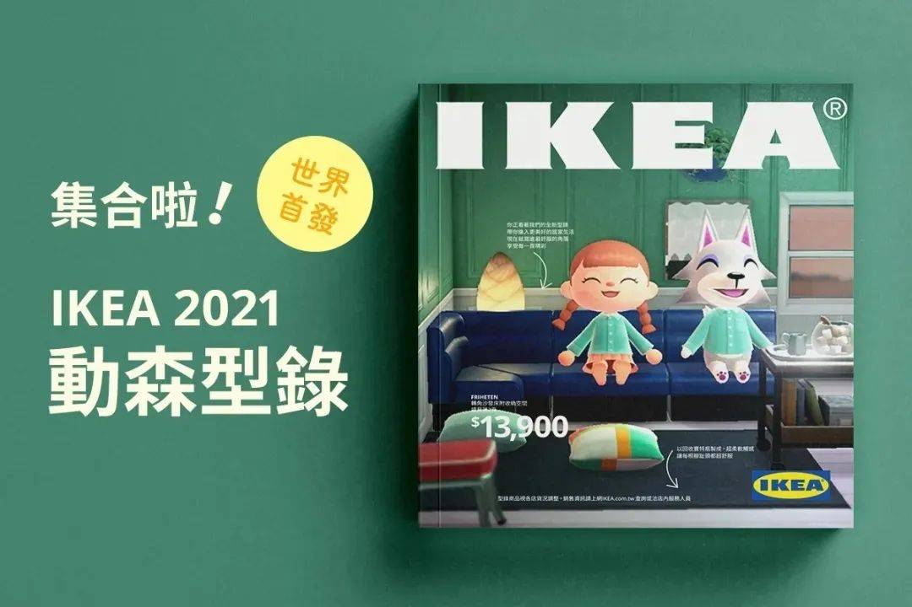

设计周刊 Design Weekly #28
Thu, Oct 8, 2020
🏷 设计系统
设计系统中上下文的重要性
https://www.designsystemsforfigma.com/blog/bringing-context-to-design-systems
Polaris设计系统 的UX经理Hayley Hughes关于上下文在设计系统中重要性的讨论。
设计系统中的上下文就像做一个产品时的需求背景。对于设计系统的使用者，在着手进行产品设计时，需要充分了解背景才能更自信的做出决策；对于设计系统的创建者，为设计系统添加上下文，可以保证团队使用的准确性。以上为自己的理解，可能片面了昂，欢迎留言补充~

🏷 设计资源
svg背景生成器
适用于网站、博客和应用程序的免费svg背景生成器。

🏷 设计灵感
赛博朋克2077 中的各种标志和壁纸
https://www.valencygraphics.com/cyberpunk-2077
赛博朋克2077中的各种标志和 4K壁纸可下载。


🏷 设计文章
色彩系统中的限制因素
https://medium.com/tap-to-dismiss/color-within-constraints-d6f777a3b72d
颜色看似简单，但让100 名设计师和工程师在每件事中都遵循是一项巨大的工程。
一个复杂产品的 AA 无障碍色彩系统构建需要考虑以下因素：
- 无障碍性：符合WCAG 2.1 的要求；
- 灵活性：平衡多个使用场景；
- 可扩展性：扩展到多个品牌、子品牌和模式；

🏷 设计新闻
宜家锁定动森·史上最酷2021家居指南
https://www.shejipi.com/451552.html
前不久，刚刚发布了《IKEA2021家居指南》的宜家，在台湾宜家的Facebook上发布了动森版《IKEA 2021 动森型录》
这本动森版的型录从里到外的设计都是模仿现实版的型录进行制作，无论是风格排版还是里面的产品摆设和照片，都能在现实版找到一模一样的对照。
